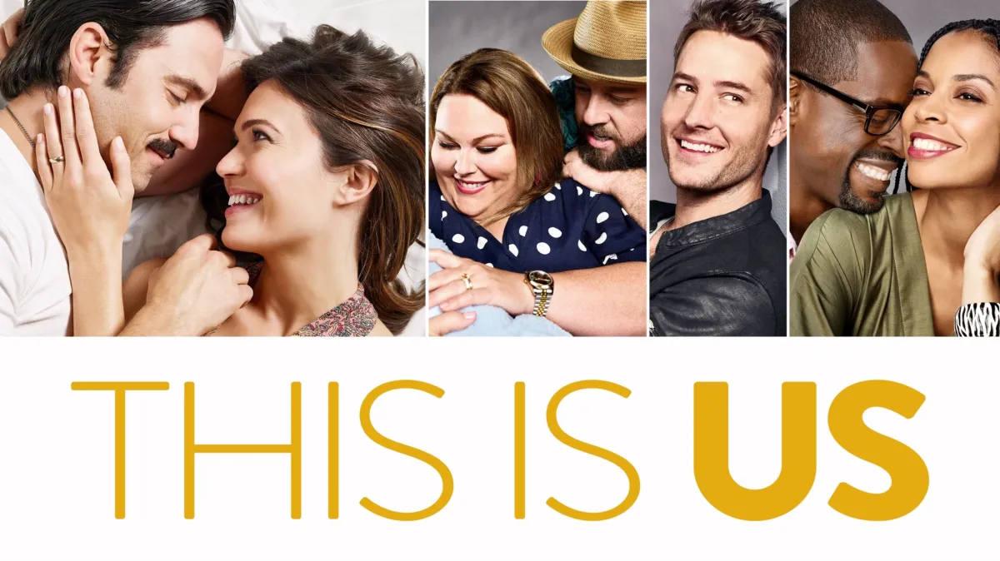

Los Personajes
Conocé a Jack, Rebecca, los Big Three y a quienes se cruzan en su camino.
Ver personajesLa historia de los Pearson
Una familia, muchos tiempos y demasiadas emociones.
This Is Us sigue la vida de los Pearson a través de distintas líneas temporales: pasado, presente y futuro. Una serie que explora la familia, el amor, la pérdida y la memoria.
Conocer a los PearsonEstrenada en 2016, This Is Us se convirtió en una de las series más emotivas de la televisión. A través de los “Big Three” —Kevin, Kate y Randall— y sus padres, Jack y Rebecca, la historia salta en el tiempo para mostrar cómo ciertos momentos marcan para siempre a una familia.
La narrativa alterna recuerdos, decisiones clave y escenas del futuro, construyendo una línea del tiempo tan fragmentada como la memoria humana. Por eso, esta fan page está pensada como un viaje emocional por los momentos más importantes de los Pearson.
Conocé a Jack, Rebecca, los Big Three y a quienes se cruzan en su camino.
Ver personajesRecorré las 6 temporadas y sus grandes momentos, desde el piloto hasta el final.
Ver temporadasJugá con la línea del tiempo interactiva y conectá los eventos clave.
Jugar ahora